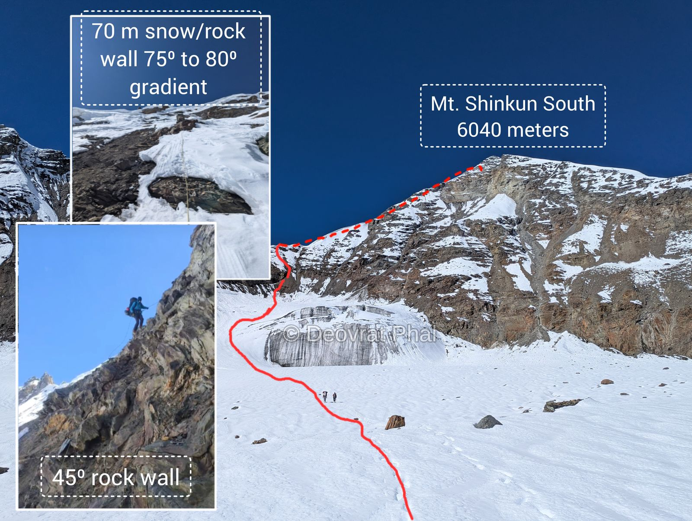
Not every expedition ends on the summit. This one ended at our summit camp (5900 m) on the shoulder ridge of Shinkun South, with a 70° ice wall between us and the top and too little technical equipment. These are the eleven days that led up to the decision to turn back.
Equipment
Personal: helmet, harness, ice axe, crampons, boots, carabiners, slings and gaiters. Group: four 2-person tents and a kitchen tent, sleeping bags and mats, cooking gear, a kerosene stove with fuel, and the usual supporting accessories and clothing.
Technical: 400 m of rope, a set of rock pitons, two ice screws, 4–5 snow anchors, a hammer, and two jumars, which we never ended up using.
Keep that technical list in mind. It turned out to be the reason behind the toughest decision of the trip. More on that later.
The team
Eight of us went into the mountains: five climbing members, two guides and a cook.
- Climbing members Nikhil Kokate, Pallavi Kadam, Ravindra Kulkarni, Vasant Yadav, Deovrat Phal
- Guides Vishal bhai, Khem Singh bhai
- Cook Prem bhai
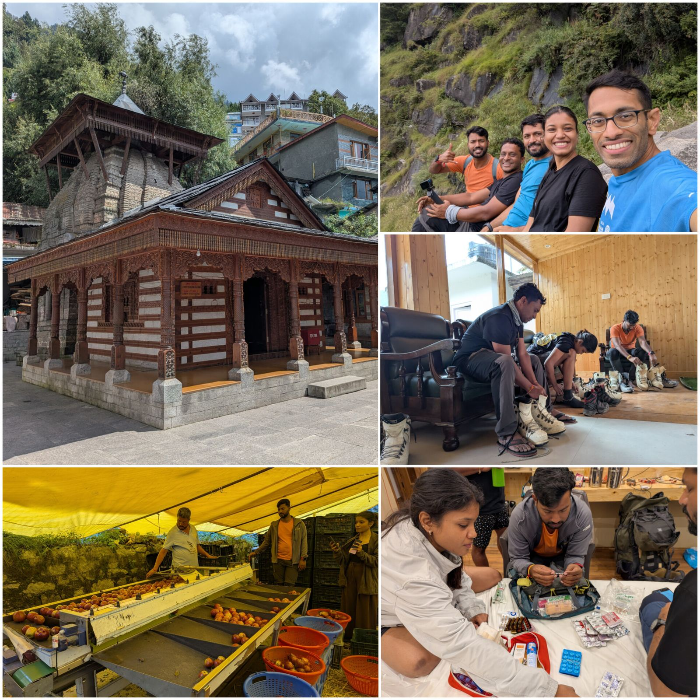
View this post on Instagram
Day 1 — 16th Sept — Manali to Jispa
All eight of us left Manali in a tempo traveller. We drove out through the forest and then through the Atal Tunnel into Lahaul, followed the road to the confluence of the Chandra and Bhaga rivers, and stopped for lunch at Tandi. The rest of the drive to Jispa was all roadside views. We took a short walk in the evening to stretch our legs and spent the night in permanent tents.
Day 2 — 17th Sept — Jispa to Sumdo
A short drive today, with a stop on the way to visit the Kali Mata temple, and we were in Sumdo by 1:30 PM. We set up camp: tents, sleeping bags, mats and the kitchen tent. It was our first night sleeping in tents, the first of many. We finished the day with a walk along the adjacent hill and a good meal of roti, sabzi and daal-rice.
View this post on Instagram
Day 3 — 18th Sept — Sumdo to the roadhead and base camp
We unloaded everything from the tempo traveller at the roadhead. Base camp was a 500 m walk away, and it took multiple rounds to ferry the equipment, supplies and personal gear across. The weather stayed cloudy, with light rain until about 3 PM.
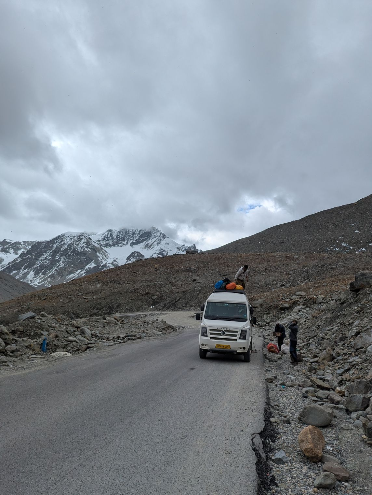
Day 4 — 19th Sept — Base camp: acclimatization and load ferry 1
I woke up with a heavy head and vomited twice. The altitude was making itself felt. The morning began with a puja of our equipment, with halwa as prasad, followed by breakfast. Then we climbed along the ridge on our first load ferry to the advance base camp (ABC). ABC sits on the ridge, about 400 m below the water stream.
We also went through the equipment properly that day, and a few things stood out that could hamper the summit attempt. Before the trip, we had been assured that the rack would cover everything the route needed, jumars included. The check told a different story: we did not have enough ice screws, and there were too few jumars for the members who would need them. We raised it with our guides, who assured us the route would go with what we had. This far into the trip there was not much more we could do about it, so we made a note and carried on.
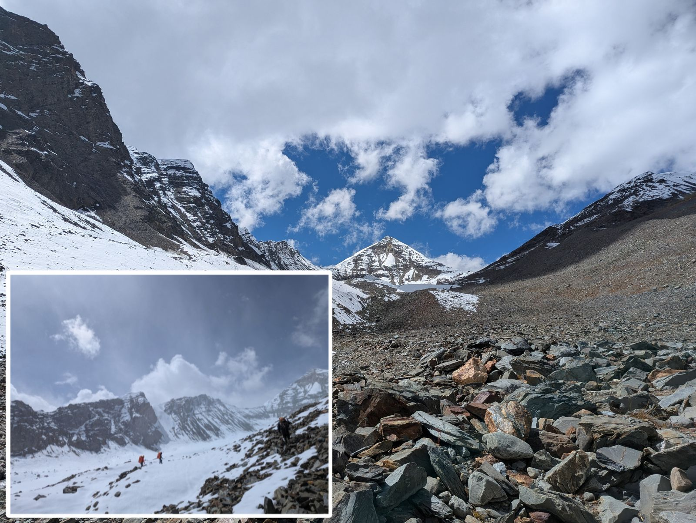
Day 5 — 20th Sept — Base camp: acclimatization and load ferry 2
The weather was good and clear. After a breakfast of omelette, paratha and tea, we packed up for the second load ferry, carrying a packed lunch, and the ferry took a little over two hours. After resting, we explored a little higher, hoping to catch a glimpse of the west peak, but it stayed hidden. Back at base camp we fitted our crampons to our boots and discussed the plan for the next day. Dinner was fried rice, roti, sabzi and kheer.
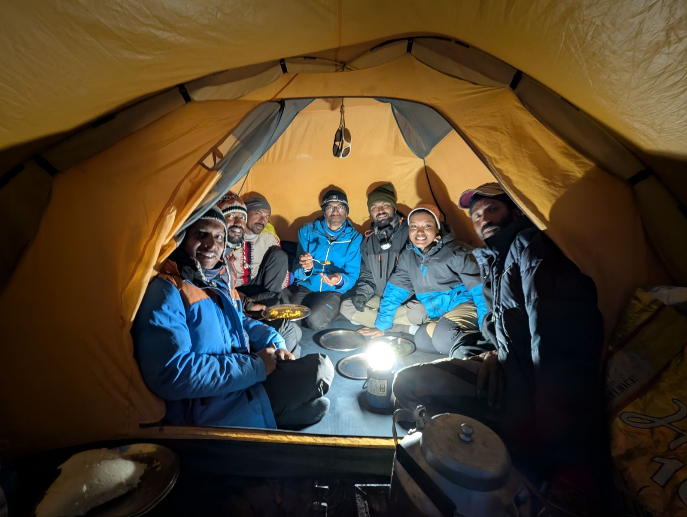
Day 6 — 21st Sept — Base camp to Advance Base Camp
It was a windy night under a clear sky with the Milky Way out, followed by a windy morning. Breakfast was parathas, boiled eggs, melon and apple. The plan was to occupy ABC. We left a few items at base camp, set off at 11:20 AM and reached ABC at 2:20 PM. We had kadhi chawal for lunch and pitched the tents while the tea was being made. I tried on my helmet for the first time on this trip, and it was tight. It was not a mountaineering helmet either. Knowing that another vital piece of equipment was going to be uncomfortable on the route made me even more cautious about the days ahead. We slept early, under another excellent night sky.
Day 7 — 22nd Sept — ABC: acclimatization and route scouting
We woke up at 7:30 AM as the sun hit the tents. Breakfast was black tea and cornflakes. At 8 AM, Vishal bhai and Khem Singh bhai went ahead with equipment to scout the route. The rest of us practised roping up and front-pointing. After enough practice we walked to the water stream point, some 300 m away in the direction of the Shinkun West approach. We were back at the tents by 1:23 PM for dal, rice and pickle.
Vishal bhai and Khem Singh bhai returned at 3:45 PM and briefed us on the route. The plan was to move up to Camp 1 the next day. At 5 PM the sun set behind Shinkun South and threw its long shadow over camp. The mild headache was still there.
Day 8 — 23rd Sept — ABC to Summit Camp
This was the longest and most tiring day of the expedition. We woke up at 6:15 AM and packed everything: gear, sleeping bags and mats. Breakfast was dalia, cornflakes and tea. For the day we carried packed lunch, two mixed fruit juices and apples. Anything we would not need higher up, like the approach shoes and extra shirts, stayed behind at ABC. We put on boots and crampons and took out our ice axes and one walking stick.
Our first stop was the water point. Here the stream coming off the glacier vanishes into hidden crevasses. For the South route, we then roped up to cross the snowfield in front of the hanging glacier.
Before the hanging glacier, we parted ways with Prem bhai, our cook. He had had a nosebleed since the previous night that would not stop. He decided to go down to a nearby town to see a doctor while we carried on. He handed his share of food and supplies over to us, and we split up.
From here the route steepens into snow and ice. We soon reached the first technical section, a 40 m rock wall, around grade 5 but with extremely loose rock, that we climbed in two pitches. Then came a 70 m snow and ice wall at 75° to 80°, with some exposed rock. This section was literally a game of dodgeball with falling rocks, and each of us was carrying an 18–20 kg pack up steep ground. That section turned out to be the hardest climbing of the whole expedition, and by now we could feel the altitude in every step.
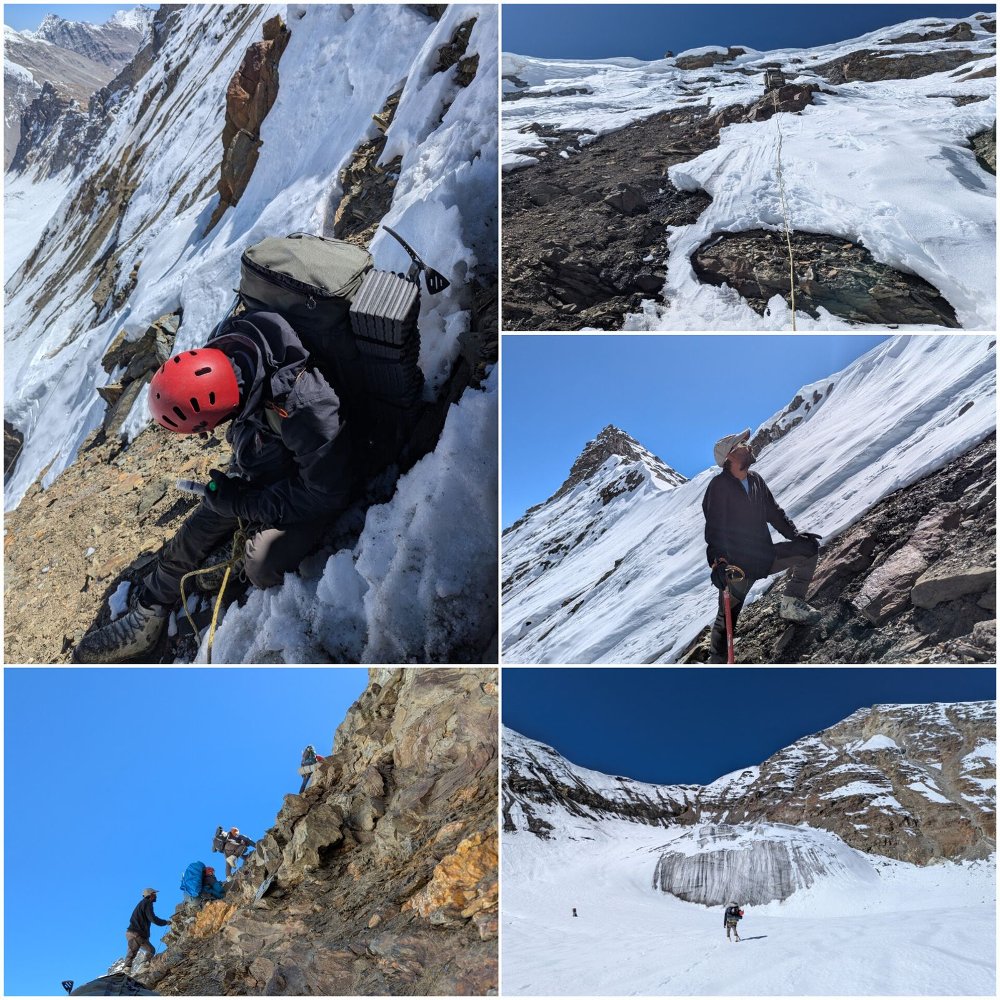
It was 5:30 PM by the time everyone reached the shoulder ridge. Pitching the tents and winding up the ropes and equipment took until 7 PM. Our original plan was to start the summit push at 2 AM, but after a day like this that looked unlikely. We had dinner at 8:15 PM and slept at 10.
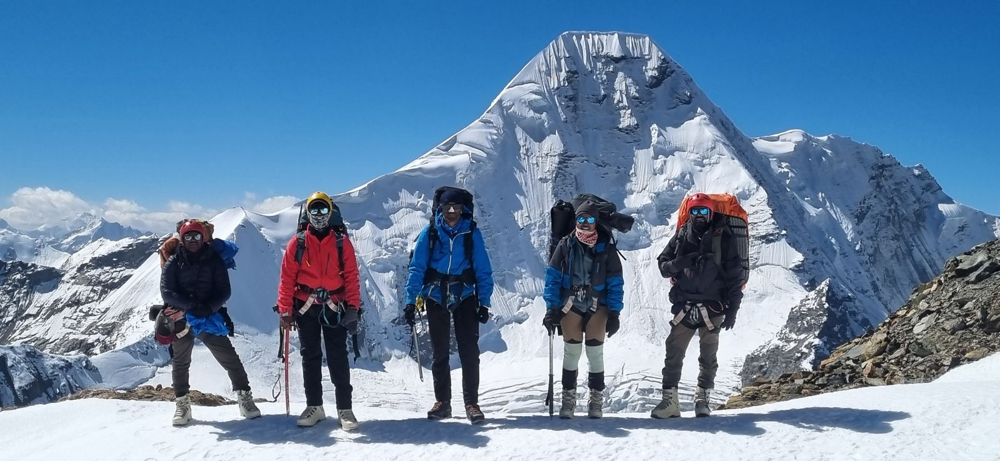
Day 9 — 24th Sept — Rest at summit camp
We let the 2 AM start go and stayed at summit camp for a full day and night instead, to recover, and to make a plan for the following night based on the equipment we actually had. Even resting, we could feel the altitude at summit camp.
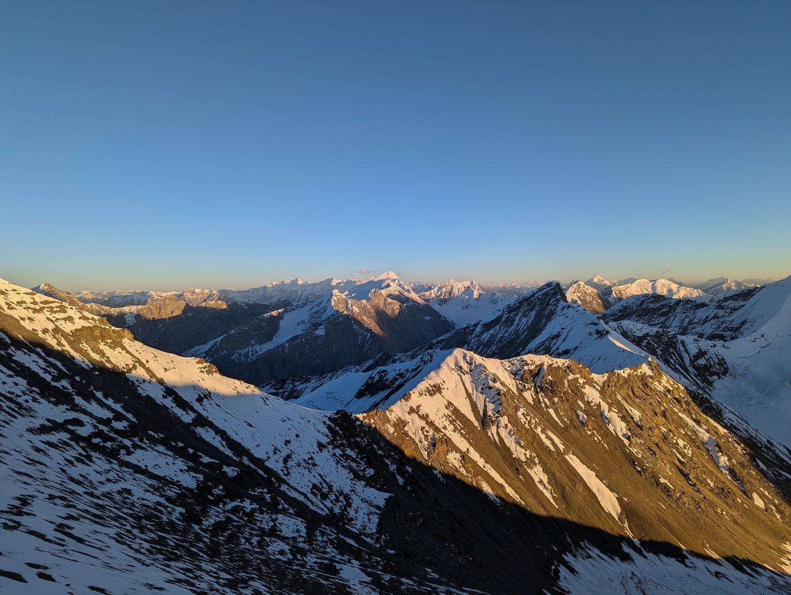
The tough decision
From summit camp, the next part of the route was plain to see. An ice wall of about 70° (roughly 30 m high followed by a 45° slope till the summit) stood between us and the summit. For it we had two ice screws and four snow anchors.
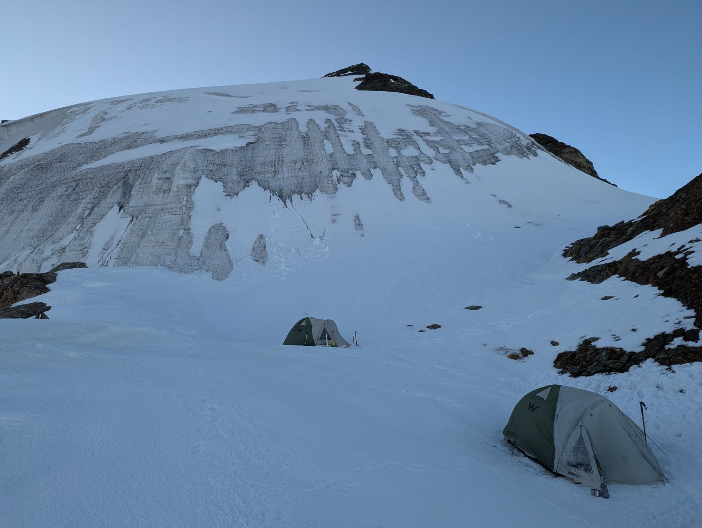
To be clear about what the problem was not: the hardest climbing was already done. The loose 40 m rock wall and the 70 m snow-and-ice wall below summit camp had asked more of us than the ice wall above was going to in technical terms. We could most probably climb it. What we could not do was protect it.
That much all of us knew. Every one of us had completed the Basic and Advanced Mountaineering Courses and had field experience. This is exactly the kind of situation that training teaches you to recognise.
On 70° ice, the rope only protects you if it is clipped into something that will hold, and ice screws are that something. The leader places them on the way up, so a fall is caught after a few metres instead of running the full length of the wall. The belay anchor at the top of each pitch is built from them too, ideally two screws linked together so one backs up the other. With two ice screws, you get just one piece of protection for the leader along with one point for an anchor, and never a backup. On a wall like that, if a single-point anchor fails, the whole rope team goes with it.
The snow anchors could not fill the gap. They hold well driven or buried in firm snow, but hard, steep ice gives them nothing to grip.
The jumars were the second problem. The two we had were down at ABC left by our guides with the other gear. Without them, anyone following the leader would have to ascend the fixed rope on prusik knots as per our lead-guide (not recommended according to our training).
Then there was the descent. Coming back off that wall, whether after the summit or midway because of weather or an injury, meant abseiling. That required anchors we could not make redundant with the gear we had, and then reversing the rockfall section below.
We had seen this shortfall coming at the equipment check on Day 4. We had hoped the route higher up might be kinder than we feared. Looking at the wall from summit camp, it was clear it was not.
So we made the call to turn back. It was not bad luck. It was a gap in our equipment that we recognised early, and in hindsight we should have pushed to close it before we left the roadhead. That is the biggest lesson we are bringing home from Shinkun South: check the technical rack yourself, against the route, before you commit to the mountain. The summit will still be there.
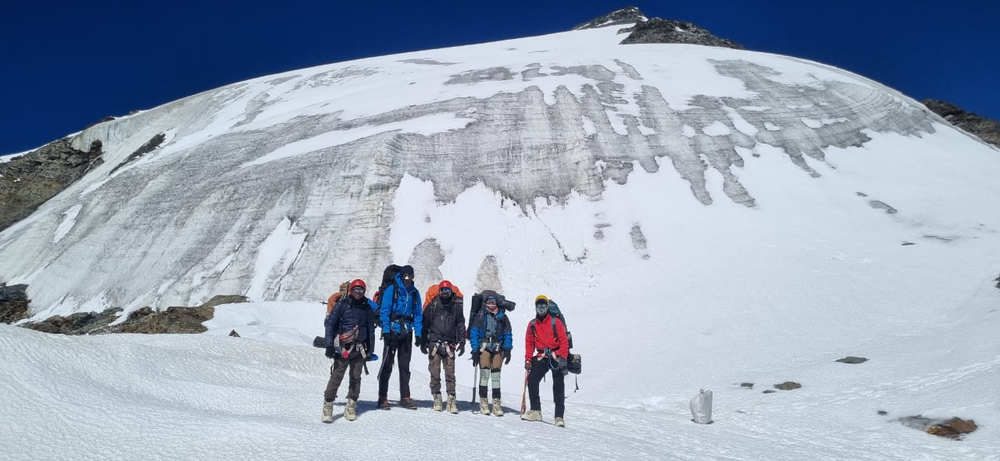
Day 10 — 25th Sept — Summit camp to base camp
The morning started with a small celebration at summit camp — it was my birthday. Then we packed up and started down. The descent through the rock and ice section was no gentler than the climb had been. We abseiled down the snow-and-ice wall and the rock wall, with the same loose rock coming down around us, only now on tired legs.
We were at ABC by 2 PM. Prem bhai was there waiting for us, back from his trip down to the doctor. We cleaned up ABC, packed up what we had left behind there, and carried straight on to base camp, arriving at 3 PM.
Day 11 — 26th Sept — Base camp to Manali
The last morning was all camp wind-up: tents, kitchen, and multiple trips between base camp and the roadhead to bring everything down. With the vehicles loaded, we drove up to have a look at Shinku La before turning around and heading back to Manali via Tandi.
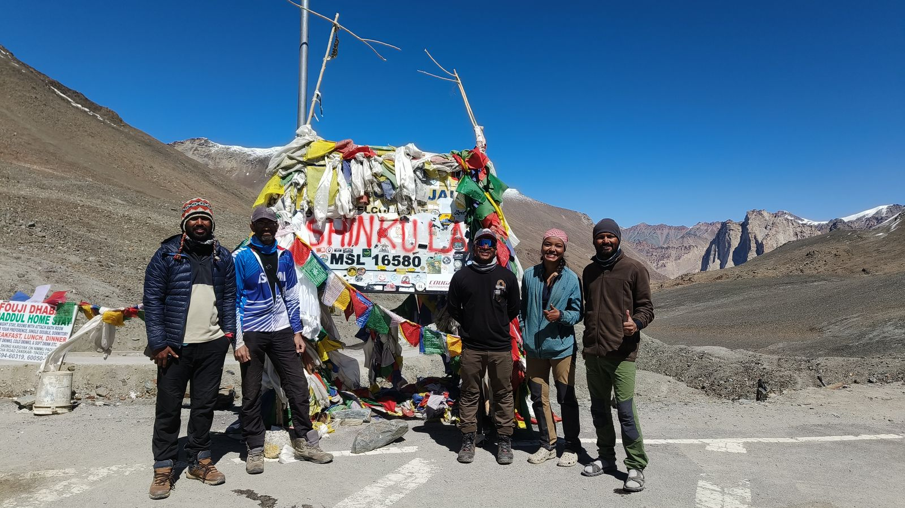
After the expedition
On 29th September, three days after returning to Manali, we visited the Indian Mountaineering Foundation (IMF) in Delhi. We shared our account of the expedition with the officials there: the shortfall in technical equipment, and a few decisions on the route that differed from what we were taught on our Basic and Advanced Mountaineering Courses. These included ascending the fixed rope on prusik knots instead of jumars, the jumars being left behind at ABC, and helmets that were not built for mountaineering. We did not go there to blame anyone. We went so that the next team on this route goes up better equipped than we did.
View this post on Instagram